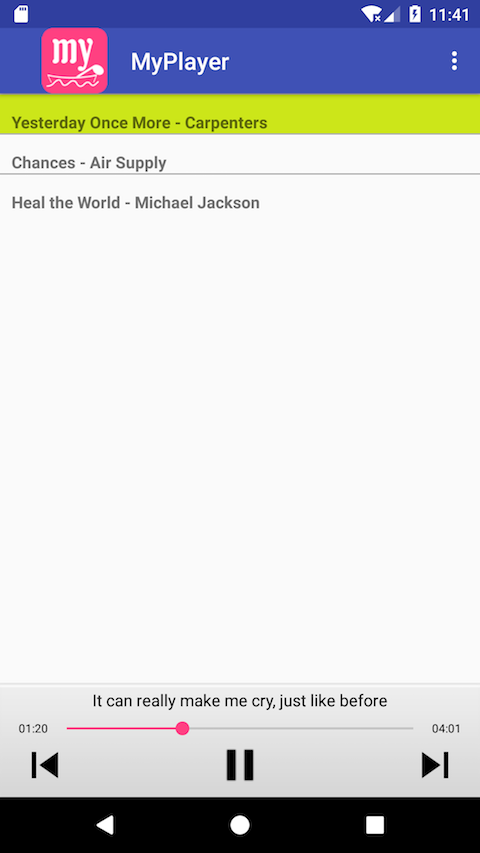
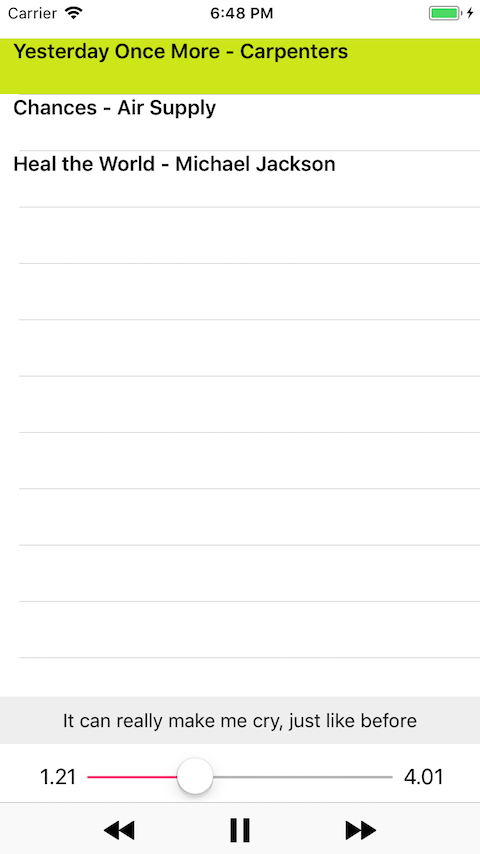

Small! Fast! It's the audio artificial intelligence era!
Anida is an audio codec and audio compression format developed by Sevenuc Consulting. It was designed to reduce audio data size to reduce transfer time and save disk space. The Anida engine was designed as a KAM (Kilobytes Audio Machine) for deeply embedded system running on small devices and has a small footprint, it promised to compress common music files with kilobytes as opposed to megabytes.
From ICQ to AAI, the next generation of Help Desk Service System based on:
TTS (Text-to-speech system, speech synthesis) + ASR (automatic speech recognition) + AI (artificial intelligence) + Anida.
(AAI: audio artificial intelligence, the brand new abbreviation word created by Sevenuc Consulting.)
Why Anida?
- Save Storage Space. Very high compression of Anida audio codec can be used to save storage space from large scale music sharing sites, live chat app and games, to embedded systems running on small devices. High compression is also very important for end users, who don't want to save 85% and more large storage space in his mobile phone?
- High Performance..
Reduce user wait times.
a. Fast decoding speed. Whether running native machine code that compiled from C code or running javascript code that embedded in web page.
b. Fast transfer files with an ultra small file size neither play audio on a web page nor on a mobile phone. It's an important factor to impact your end user's experience, especially the networks that has narrow bandwidth, e.g the mobile networks. - Save Energy. Small audio data file can save so many energy, save large cost of current running applications. Anida audio codec was designed to upgrade the current popular audio codecs used in Instant Messengers, softphone and VoIP.
Features
- Very high compression, smaller than popular audio codecs. Very high compression is the strength and advantage of Anida audio codec in comparison to other audio codecs: such as SILK (used by Skype), AAC (used in MP4), Speex, 3gp AMR, Opus, X264, GSM6.10, G729, G711, G722 and normal audio format such as MP3, M4A, Ogg and WMA. According to it's extremely small data output and fast decoding speed, it can be easily applied to large number of technology and product, especially live streaming audio, live chat in game and app, music share solution, music player and video player development, TV, new multimedia design, new animation and video format design.
- Universal audio compression, best balanced compression rate and quality, has the ability to convert almost all legacy audio from low bitrate to very high bitrate audio format with any sample rate, most legacy audio formats on Unix, Macintosh, Windows, Linux and Other platforms, such as PSP, Xbox etc.
- Very suitable for remote music share, radio channels, online TV, video conferencing, in-game chat, music player, audio book, voice mail, Instant Messengers, Chat Apps (such as Jabber, ICQ, Skype, Viber, Google Hangouts, WhatsApp, LINE, Kik, Slack, Telegram, etc), translation assistant, softphone (TextME, TalkCall etc) and VoIP (X-Lite, Zoiper etc).
- Adaptable for common protocols such as RTMP (Real-Time Messaging Protocol), WebRTC (Web Realtime Communication), and industry standard RTP (Realtime Transport Protocol) and RTSP (Real Time Streaming Protocol).
- Small footprint, simple, and easy-to-use, designed for deeply embedded systems, written with ANSI C without extra dependencies (except the standard ANSI libc, several mathematical functions and I/O access) and can be easily ported to all platform and bind to all common programming languages.
Demonstration: → ♪ demo link.
Simple Comparison Table:
Audio Codec Comparison:| File Name | Wav | MP3 | Anida |
| Yesterday Once More - Carpenters | 42.6MB | 3.9MB | 482KB |
| Chances - Air Supply | 37.9MB | 3.4MB | 428KB |
| Heal the World - Michael Jackson | 67.9MB | 6.2MB | 767KB |
| Total: | 148.4 MB | 13.5 MB | 1.6 MB |
| The result made from three music files, they are counted in wav, mp3, and Anida formats. | |||
Sample App Comparison:
| Case No. | Number of songs | MP3 | Anida | Saved Storage |
| App 1 | 150 | 846.9 MB | 42 MB | 95% ! |
| App 2 | 318 | 1777.8 MB | 149 MB | 92% ! |
Obviously, Anida based on products can save large number of storage!
Android client for Anida

"Yesterday Once More" is the "Chances" to "Heal the World"!
MyPlayer means personal private music player.
iOS client for Anida

"Yesterday Once More" is the "Chances" to "Heal the World"!
Personal Private Music Player
Personal Private Music Player is a specially service for peoples who want to listen their favourite musics on Android or iOS devices. We help to convert their favourite music to Anida format files and develop a specially customised music player only used for themselves privately so that they can enjoy them on mobile phone or tablets. The music source files can come from DVD, CD, Movie, Flash, Game, common audio files, Web Page and any other music materials, and internet. (in fact we also provide search service to find someone's favourite music on internet if they requested and get small fee).
more info: → ♪ Personal music service.


Anida Server
Anida Server is an universal audio format converter that can convert almost any kinds of audio files on Mac OS X, Windows, Linux, Unix, PSP, Xbox and other platforms to Anida audio compression format, the supported audio file formats included but not limited to:- MP3, AAC, M4A, Ogg Vorbis, WMA, FLAC, WAV, APE, AIFF, Musepack, Monkey's Audio, Shorten, WavPack
- Audio format on PSP, Amiga, Palm, WinCE, MTK, Symbain, Ngage, Nintendo, Wii and other platforms: psf, minipsf, psf2, minipsf2, spu, ssf, minissf, dsf, minidsf, qsf, miniqsf, CUE, it, xm, s3m, mod, MPC, shn, wv, wvp, ay, gbs, nsf, nsfe, sap
- Any codec supported by Mac OS X's Core Audio and the FFmpeg libraries.
mp2, amr, ac3, qt, adts, mp3, m4r, wav, 3gp, mpa, sd2, mpeg, ec3, m4a, mp4, mov, snd, aifc, caf, flac, m4b, 3g2, mp1, aac, aiff, aif, au
Anida SDK
Anida audio codec, provide brand new audio solution from enterprise cloud solution to deeply embedded systems, live chat in game and app, radio channels, instant messengers (instant chat apps), softphone and VoIP, music player, and video player etc, all kinds of products that requires an extremely small and fast audio codec.
Anida SDK provides tools, headers, libraries, and code samples to help developer to easily use Anida audio codec to create apps that run on Google Android phones, Apple iOS devices and macOS (Mac OS X), and web browsers (javascript code translated by emscripten), and all kinds of embedded systems. Other platforms will be supported when requiring, such as Microsoft Windows Phone and Windows desktop, BlackBerry, Linux, Unix, and any embedded systems based on plenty of RTOS, such as μC/OS-II, mbed OS, FreeRTOS, eCos, QNX, VxWorks etc.

Anida Video Format
Anida audio codec can be easily merged in FFmpeg library to support self-defined custom video file format, and these video files can be magically reduced to a more smaller size than encoded with AAC audio codec.
Web client for Anida
| Number of songs | MP3 | Anida |
| 150 | 233.9 MB | 36.4 MB |
| Saved 85% storage! (This sample app uses the web version of Anida to increase the speed of decoding but it has a little more lower compression rate than native compiled C code, decreased from 93%~96% to 85%~87%.) | ||
The offline Anida music player, download here: Anida.tar.gz (27.6MB)
SHA256 checksum:
2c6f4637d7ee6f7bd02e121a9d72508d9c3235f8169a0496397c192fb5f71944
The sample app of the javascript version of Anida decoder can be viewed online, please take a look here: → ♪ demo link.
Intellectual Property Transfer
The Anida audio codec, and its Android client, iOS client, web client and Anida server, and other relevant materials will be sold as a whole to an appropriate individual or company. Please contact us if you're interested in this wonderful audio solution.
Small! Fast!
Enjoy ultra small audio file now!